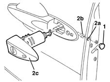
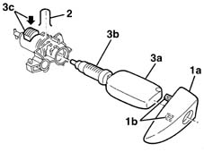
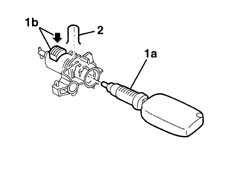

7005C17 block for front side door lock r r with door panel removed
- Path
- Procedures > 70 FITTINGS > 7005 PASSENGER COMPARTMENT FRONT SIDE DOORS > 7005C front lock controls > 7005C17 block for front side door lock r r with door panel removed
- Kind
- repair procedure (removal / refitting; the operation number is the code)
- Applies to
- all engines; all production periods
- Interactive page
- https://sloeber94.github.io/elrnDB-lYpsln/en/#/2429489
Applies to: all engines; all production periods
 Removing
Removing
 Refitting
Refitting1. Release the cover from the opening.
2. Working via the opening (2a), loosen the inner bolt (2b) until the lock barrel assembly (2c) can be released.

Applies to: all engines; all production periods
1. Remove the trim (1a) releasing the retainers (1b).
2. Remove the cylinder retaining clip.
3. Insert the key (3a) into the cylinder (3b) and extract it by pressing the retainer (3c).

Applies to: all engines; all production periods
Refitting
RemovingCheck that the key cylinder is not damaged.
1. Fit the cylinder and key (1a) in place, keeping the retainer (1b) pressed.
2. Fit the retaining spring.

Applies to: all engines; all production periods
Extract the key and fit the trim using the retainers.
Position the lock barrel, tighten the bolt and refit the cover.